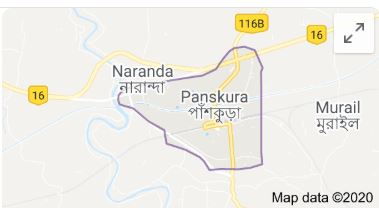
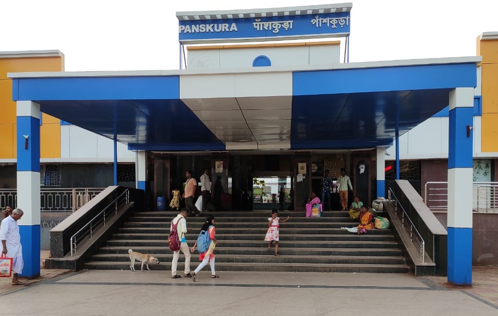

LOCATION
Panskura is located at 22.42°N 87.7°E.[3] It has an average elevation of 7 metres (26 feet). It is situated on the NH6 on the way from Kolkata to Kharagpur.

HISTORY
According to many references, the name Panskura have been originated from the word "Panchkoora". The king of Kasijora once gave some land to the poet Nityanand Chakrabarty at the time of his ‘Diksha’.

PANSKURA JN
Panskura Junction is a railway junction station on the Howrah-Kharagpur line.The line was opened in 1900.